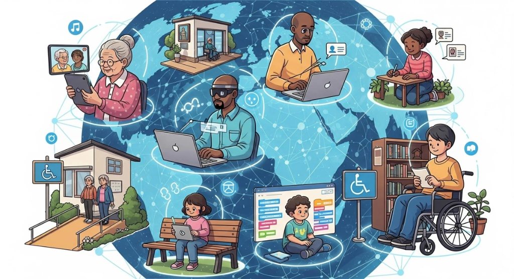

Inovação & Tecnologia
A Inclusão como Motor de Transformação no Mercado de Trabalho
A inclusão corporativa vai muito além do cumprimento de cotas. Ferramentas digitais com leitores de tela acurados, sintetizadores e ergonomia personalizada possibilitam que profissionais com deficiências liderem projetos estratégicos com total autonomia.